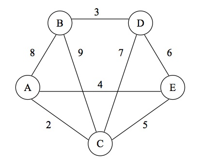

WRITTEN PROBLEMS (8 pts)
Hand these problems in on paper in class on the due date specified.

digit ← 0 | 1 | 2 | 3 | 4 |
5 | 6 | 7 | 8 | 9
base ← digit { digit } . digit { digit }
exponent ← E digit digit
float_number ← base [ exponent ]
(a) Show that the following strings are valid floating point numbers by deriving them from the float_number rule above.
(b) Draw a syntax diagram for each of the EBNF rules above.
(c) For each of the following strings, explain why they are not valid floating point numbers according to the EBNF rules above.
(a) A central processing unit (CPU) of a computer only executes instructions written in what language?
(b) What is the purpose of a compiler?
(c) High-level programs can be translated for the CPU to execute only if they do not contain what kind of errors?
(d) What is the difference between an interpreter and a compiler?
program mystery(input,output);
var i, sum, n: integer;
begin
read(n);
i := 1;
sum := 0;
repeat
sum := sum + i;
i := i * 2;
until i = n;
writeln(sum + 1);
end.
(a) What does the 2nd line in the Pascal program specify? How does this differ from Python?
(b) Draw a flowchart for the loop in the program above.
(c) What computation is the program performing with respect to n?
Consider the following Scheme definitions for cars that include the make, mileage, color and fuel efficiency (mpg), respectively:
(define mustang (list 'Ford 4328 'red 26)) (define sonata (list 'Hyundai 54326 'black 30)) (define traverse (list 'Chevrolet 3820 'white 24)) (define civic (list 'Honda 72019 'silver 36)) (define prius (list 'Toyota 2144 'green 48))
(a) What is the value of (first traverse)? What is the value of (rest prius)?
(b) Complete the following Scheme definition:
(define (color car)
(________________________________))
(c) Using the following Scheme function definition:
(define (compute car1 car2 car3)
(+ (first (rest car1)) (first (rest car2)) (first (rest car3)) ) )
What does the following Scheme function return as its result?
(compute sonata civic mustang)
Show your work by performing a series of substitutions to show how Scheme evaluates the function.
parent(homer, bart). parent(homer, lisa). parent(homer, maggie). parent(marge, bart). parent(marge, lisa). parent(marge, maggie). parent(abe, homer). parent(jacqueline, marge). parent(jacqueline, patty). parent(jacqueline, selma). male(bart). male(homer). male(abe). female(marge). female(lisa). female(maggie). female(jacqueline). female(patty). female(selma). father(X,Y) :- parent(X,Y), male(X). mother(X,Y) :- parent(X,Y), female(X). grandparent(X,Y) :- parent(X,Z), parent(Z,Y).
What is each of the following Prolog queries asking (in English)? What are the results of each query based on the rules above?
?- female(homer). ?- parent(X, marge). ?- grandparent(abe, Y). ?- father(X, Y).
Hand this in electronically using the Electronic Handin System by 11:59PM on the due date indicated.
Write a short Python program that processes an array of data and reverses the order of the data. For example, if your original array is [3,1,6,4,8], then your program should output [8,4,6,1,3]. Don't just print each element starting from the last element, working backwards. You should change the array so it really is reversed before you print it (see the algorithm below). Your program should work for any size array.
Basic Algorithm:
1. Create an array A with integers in it. 2. Set i = 0 3. Set n = (length of the array A) 4. Exchange A[i] with A[n-1-i] 5. Add 1 to i 6. Go to step 4 and repeat until the array is reversed